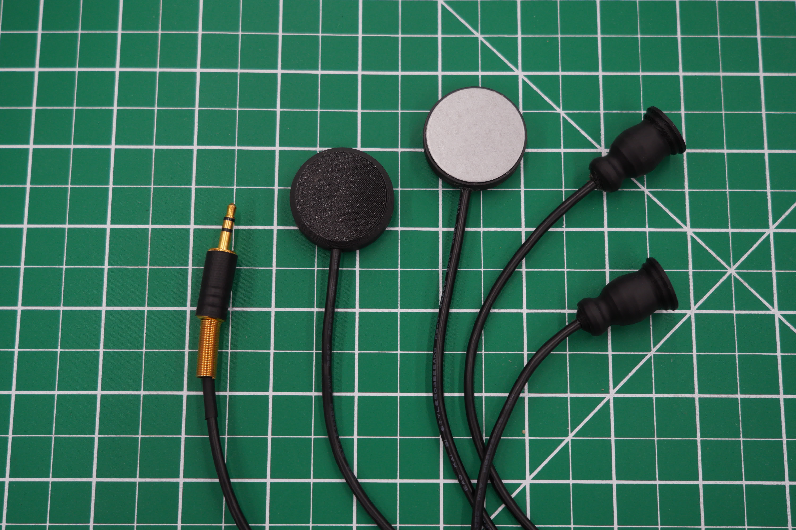
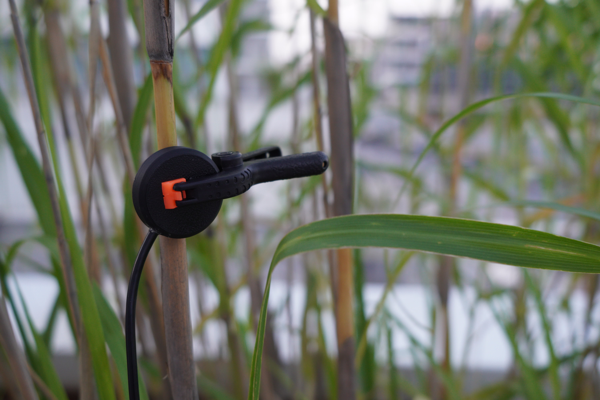
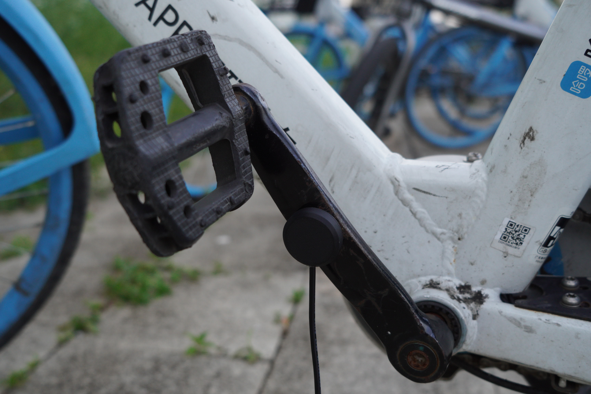

选择你的接触式（麦克风）声音中的近距离接触 DIY 工作坊

从一片 piezo 开始，焊接、测试、封装，再用它录一段物体里的振动。
工作坊说明
我们平时听到的大多是空气里的振动。物体内部也会传递振动，但不一定能通过空气被听见。接触式麦克风（Contact Microphone） 是一种贴在物体表面、直接拾取固体振动的传感器。
工作坊提供材料、电路和三条制作路径。每个人先完成基础款，再根据时间和兴趣选择是否继续做 PiP 或 P48 版本。
最后用现场设备录音，并播放每个人选出的 60 秒素材。
我们会一起做什么
1 · 听：参考作品与制作案例（约 25 分钟）
开场会先看和听一组具体参考：
- Toshiya Tsunoda: Extract From Field Recording Archive：用小型麦克风和接触式麦克风记录港口、路面、绳索等物理振动
- Jacob Kirkegaard: AION：在切尔诺贝利禁区的废弃空间里记录房间共振
- Christina Kubisch: Electrical Walks：用感应耳机把城市里的电磁场转成可听声音
- The Gladys Hydrophone：基于 piezo 和缓冲电路的 DIY 水听器制作案例
- LOM: DIY contact microphones：接触式麦克风和前级 / buffer 的技术笔记
听完这些，再做一个现场 A/B/C 演示：同一片 piezo 接三种电路，比较低频、噪声、供电和线缆长度带来的差异。
2 · 学：电路原理（约 20 分钟）
不需要电子工程背景。我们会用最直白的语言解释：
- piezo 是怎么"发电"的（压电效应）
- 为什么直接接设备会"丢低频"（高阻抗源 vs 低阻抗负载）
- JFET buffer 怎么解决这个问题
- PiP 与 P48 各自适用什么场景
- 为什么 PiP 用一根线就能同时走信号和供电
3 · 做：三条路径任选（约 60 分钟）
所有人先完成基础款，保证每个人结束时都带走一只能工作的麦克风。然后根据时间和兴趣继续。
基础款
直接连手机、iRig 或相机即可使用。简单，但已经能听见很多东西。
PiP 款
低频保留更多。接 iRig、Zoom 录音机、相机（开 PiP），声音更稳定。
P48 款
更适合调音台或带 P48 的便携录音机，也适合较长线缆。
外壳：我们提供 3D 打印的统一外壳，预留扩展腔可以容纳进阶电路板。
封装：用 5 分钟快干环氧树脂直接灌进外壳里。3D 打印外壳本身就是模具，不脱模。工作坊结束就能拿走（完全固化要回家放一晚）。
4 · 录：现场 + 外出录音（约 60 分钟）
我们提供三个录音任务，三选一（不限于此，但任务可以在你不知道录什么的时候帮你起步）：
- A. 三种材质：金属的、木质的、活的（身体 / 植物 / 水），各 20 秒
- B. 一个空间的三个尺度：墙、家具、小物件
- C. 一个不可见的振动：冰箱、水管、地板、窗户共振
录音设备：iRig + 手机、Zoom 录音机、调音台（看你做的是哪一款），都在现场。
5 · 分享：集体聆听会（约 30 分钟）
用监听音箱播放，每人 60 秒。听完之后简短地说一下你录的是什么、为什么选它。
你会带走什么
- 一只你自己做的接触式麦克风
- 一段现场录音
- 对固体振动、接触拾音和阻抗匹配的基本理解
- 一份基础电路知识，之后可以继续改电路或加效果
我们提供什么 / 你需要带什么
我们提供：piezo（20mm / 27mm / 35mm 三种）、JFET buffer 板、P48 平衡前级板、3.5mm TRS 与 XLR 接头、屏蔽线、3D 打印外壳、5min 环氧、焊台、iRig、Zoom 录音机、小调音台、监听耳机和音箱。
你需要带：你的手机或笔记本（用来听 / 存录音）。如果你有自己常用的录音机或便携设备，欢迎带来。
实务信息
- 时长：约 4 小时
- 人数：10–15 人
- 背景要求：无。声音艺术 / 电子基础有帮助但不必要
- 安全提示：焊台是热的；不要把 PiP 麦插到 P48 接口（会烧 JFET）；P48 设备要先接线再开电、先关电再拔线
Choose Your Own Contact (Microphone)A DIY workshop for close contacts in sound

contact (noun): The state or condition of touching; the mutual relation of two bodies whose external surfaces touch each other. Hence to be or come in (into) contact (Oxford English Dictionary).
Workshop Overview
Most of what we hear, what we call sound, arrives at us as variations of pressure in the air. Objects vibrate inside themselves too — most of the time, those vibrations don't make it through the air to our ears. In this workshop we will learn how to build and use different kinds of contact microphones that rely on close proximity to the source to pick up and amplify sounds that would otherwise remain hidden.
This is a choose-your-own-adventure workshop where you choose what kind of contact mic you want to build and what kinds of sounds you want to hear. We will come in contact with solid materials, plants, bodies of water and minuscule vibrations in the world around us.
We provide the materials, circuits, and branching build paths. Starting with the basic version, increasing complexity, and adjusting it based on your goals, equipment and perseverance. The applications may vary: field recording, sound design, installation, live performance, or just a curiosity towards your sonic environment -- all of these possibilities are open to the participants.
The workshop will end with a short sound walk around the campus.
Practical Info
- Location: CMA Open Lab
- Time: May 30, Saturday, 2:00–7:00 PM
- Duration: ~4-5 hours
- Capacity: 10–15 people
- Prerequisites: none. Interest in sound (art or otherwise) will suffice but some knowledge of electronics might be useful
- Safety: don't rush, soldering irons are hot; never plug a PiP mic into a P48 input; for P48 devices, connect cables before powering on, and power off before disconnecting
What We'll Do Together
1 · Listen — Reference works (~20 min)
We'll begin with a small set of references to the use of contact microphones in artistic practice:
- Toshiya Tsunoda: Extract From Field Recording Archive: small microphones and contact microphones used to record physical vibrations in ports, pavement, ropes, and other surfaces
- Jacob Kirkegaard: AION: room resonance recorded in abandoned spaces inside the Chernobyl exclusion zone
- Christina Kubisch: Electrical Walks: induction headphones used to make urban electromagnetic fields audible
- Chris Watson: Planet Ocean: underwater soundscapes captured with hydrophones
- Torturing Nurse: Live noise performance: live performance with contact microphones attached to metal objects
Then a live A/B/C demonstration: the same piezo through three circuit paths, comparing low end, noise, power etc.
2 · Learn — Basic principles (~30 min)
No electronics background required. In plain language:
- How a piezo "generates" voltage (the piezoelectric effect)
- How an inductor picks up magnetic fields
- How to change resonant frequency of the piezo element
- Why plugging it directly into a device drops the low end and how to fix it
- What plug-in power (PiP) and phantom power (P48) are, and when each applies
- How to make your microphone durable and adapt it to different environments
3 · Plan — Plan your adventure (10 min)
Think about a map of your journey, what resources you have available, how you want to approach the recording, how much time you are willing to spend etc.
4 · Build — Make your contact microphone (~120-180 min)
Everyone completes the basic version first so no one leaves empty-handed. From there you can keep going based on time and curiosity.
Basic
Plug straight into a phone, iRig, or camera. Simple, noisy, but already enough to hear a lot.
PiP
Keeps more low end. Plug into recorders with 3.5mm input, or a camera with PiP enabled.
P48
For big XLR connections. Better for mixers, portable recorders with phantom power, and longer cable runs.
Enclosure: a unified 3D-printed shell with a chamber for optional boards.
Sealing: 5-minute epoxy/E6000/silicone sealant to make your microphone durable and/or watertight (might take some time depending on the material used).
4 · Record — Campus sound walk (~60 min)
We will walk around campus and record sounds using our contact microphones. Along the way we will learn how to attach our microphones to different objects with magnets, poster putty and clamps
Some optional pointers (you can ignore them, but they're there if you don't know where to start):
- A. Three materials: metal, wood, something alive (your body, a plant, water)
- B. A space at three scales: a wall, a piece of furniture, a small object
- C. An invisible vibration: fridge, water pipe, floor, window resonance
- D. EM fields: vending machines, LED screens, your phone
5 · (Optional) Share — Collective listening session (~30 min)
Share your sonic discoveries with others. A short word from each person on what they recorded and why.

What You'll Take Home
- A contact microphone you made yourself
- Some recordings
- Some new technical knowledge
- A working baseline of circuit knowledge for later modifications of your contact mic
What We Provide / What to Bring
We provide: piezo discs of different sizes (20mm / 27mm / 35mm), JFET buffer boards for PiP builds, P48 balanced preamp boards for phantom power builds, 3.5mm TRS and XLR connectors, shielded cables, 3D-printed enclosures, various adhesives and sealants, soldering stations, recorders, a small mixer and speakers.
You bring: your recorder (if you have one), SD card to use with the one we provide, and your phone or laptop for listening and storing recordings. If you have your own recorder or portable rig, bring it.
We will provide access to schematics, 3D models, and other resources